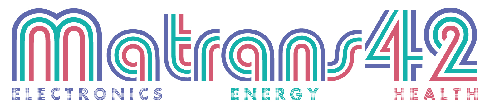
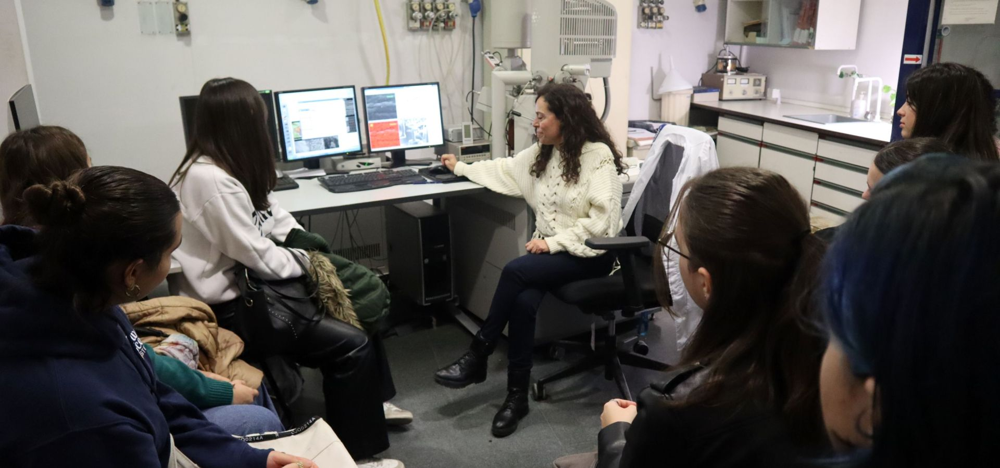
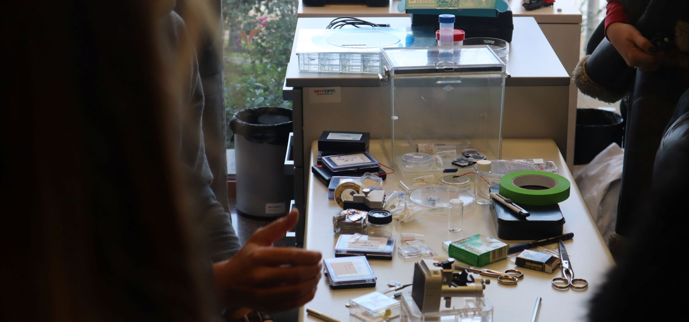
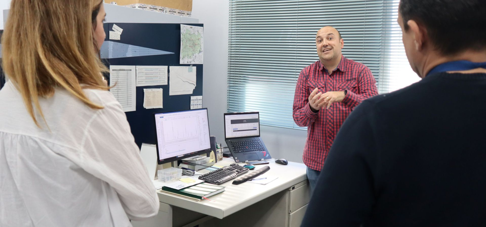
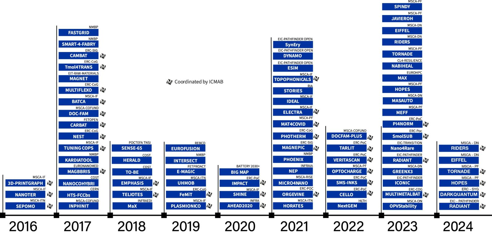

Strategic Priority Actions
Strategic Priority Actions

Technology Transfer
In 2024 we filed 7 priority patent applications and registered 2 trade secrets covering the 3 application lines of the institutes research: sustainable energy, low-cost and efficient electronics and smart nanomedicine and health.
During 2024, the Prototype Laboratory have been involved in the development of 4 functional prototype and 1 demonstrative prototype.
We created one spin-off, Delbios pharmaceuticals. The company is developing new therapies against Fabry Disease, a lysosomal storage disorder. In 2024, the R+D services and agreements reached a total funding over 350,000€ and we signed 17 NDA/MTAs with different collaborators, companies and laboratories.
In 2024 the second edition of an entrepreneurship formation programme in collaboration with PRUAB was given.
The management team of H2CAT visited the 4 groups that are members of the network. We had 1 group showing their technologies in the innovation Summit organized by H2CAT.
Researchers from ICMAB were involved in the first edition of the Printed Electronics course leaded by Cluster MAV. In June, the students of the course visit our facilities.
3 Groups participated in the Fira de Innovació organized by PRUAB in October. Our researchers had the opportunity to meet companies and researchers from the UAB Campus to start collaborations.
CSIC has launched the CONVERGE platform to facilitate the transfer of knowledge to society, through the generation of links of trust between CSIC and the agents of the innovation ecosystem. 5 groups from ICMAB participated in the first edition of the EBTON and 2 groups have been funded with 50,000€ within the IMPULSA-T call to strengthen their spin-off project.
Patents
Communication & Outreach
On 2024 our Department grew. In March, we saw the arrival of Oriol Roig and Anna Drou, and in October Carla Costa, our new graphic designer, arrived. We as well welcomed back after her maternity leave Anna May. 2024 was a year full of communication and outreach activities. We had plenty of seminars, school visits, and participation in fairs. Read all about them here!
Outreach evolution
Social media 2016-2024

OUTREACH
On 2024, many visits of researchers to school and of students to ICMAB took place within different programmes (11F, Escolab, Setmana de la Ciència, 10alamenos9, Bojos per la Física…). In the form of talks, demonstrations of the Scientific, and Technical Services and hands-on activities, these initiatives have reached more than 600 people. Some ICMAB staff also participated in different science outreach events throughout the year: Saló de l’Ensenyament, Pint of Science, European Researchers’ Night and 10alamenos9 among them, events also with a broad audience. To highlight: Joves i Ciència and Argó, in which students engage in lab activities to start learning about the centre’s equipment and specific research lines, and to gain a deeper understanding of working in a research centre.
The jewel in the crown of the outreach programmes is the MAGNET programme of educational innovation, in which ICMAB partners with the José Echegaray School. Through this programme, in which educational activities are co-developed by teachers and ICMAB researchers, a strong, dialogic, and sustained relationship is built. As a result, the centre’s overall outreach benefits from this experience, enabling a more mature approach to outreach aligned with students’ needs.
In 2024, we focused on maintaining activities that work, optimizing their impact (both qualitatively and quantitatively), ensuring their continuity and fostering dialogue with the participants to enhance social impact.
-
ICMAB and students
Visits October-December to ICMAB with the collaboration of Guillem Vargas, Rodrigo Arilla, Lluis Casabona, Anna Solé, Judith Oró, Anna Esther Carrillo, Markos Paradinas, Bernat Bozzo, Ferran Vallès, Anna Crespi, Joan Esquius, Xavi Campos, Marta Gerbolés, Luigi Morrone, Adrià Pacheco, Raul Solanas, Roberta Ceravola and David Piña.
Visit to Escola de Disseny EINA by Sergi Riera.
Visit to Escola Font de l’Orpina in Vacarisses by Ashley Black and Elzbieta Pach.
Visit to Escola Italiana de Barcelona by Riccardo Rurali.
Bojos per la Física 2024, with the participation of Arevik Musheghyan, Susana Gutiérrez, Ana Vila, Nico Dix and Juan Pellico.
Joves i Ciència 2024: Judith Guasch hosts a student inside the programme from Fundació La Pedrera.
Programa Argó 2024: Six students were hosted in ICMAB for three weeks guided by Judith Oró, Bernat Bozzo, Ferran Vallès, Anna Crespi, Xavi Campos, Joan Esquius, Luigi Morrone, Marta Gerbolés, Adrià Pacheco, Anna Esther Carrillo, Roberta Ceravola, Alejandro Borrás, Markos Paradinas and Nico Dix.
IXth edition of 10alamenos9 Nanoscience Festival with the participation of Martí Gich, Darla Mare, Bernat Bozzo, Anna Crespi, Laia Avilés and Alejandro Cuesta.
#100tifiques 2024. -
ICMAB in fairs and other venues
ICMAB at the Saló de l’Ensenyament with the collaboration of Ferran Vallès, Elzbieta Pach, Thomas Günkel and Mar Tristany.
International Day of Girls in ICT, with the inauguration of a ‘STEAM Women’s Encyclopedia’, with the collaboration of Teresa Puig.
“La transició energética: reptes científics i oportunitats per la innovació” series of conferences organized by Xavier Obradors.
‘Bateries basades en elements abundants: on som i cap on anem?’ talk by Rosa Palacín in the “Dilluns de Ciència” series.
‘Superconductors d’alta temperatura: una oportunitat essencial per a les exigències de la transició energètica’ by Teresa Puig in the “Dilluns de Ciència” series.
“Big Hands Holding Small Hands” outreach event in Beijing with the participation of Elies Molins. -
MAGNET:
The MAGNET programme, led by Anna Crespi, counts with the continued participation of Judith Oró, Roberta Ceravola, Nico Dix, Bernat Bozzo, Alejandro Goñi, Guillem Vargas, Stefania Sandoval, Alexander Ponrouch, Raquel Gimeno, David Amabilino, Martí Gich, Ana Conde and Nico Dix.
Presentation of the MAGNET programme.
Visit of the Nobel Laureate Sir Fraser Stoddart to escola José Echegaray.
European Researchers’ Night celebration

EXTERNAL COMMUNICATION
We managed to increase our impact externally through our website, social networks, and media impacts, sending over 13 press releases, apart from participating in radio programmes and podcasts. We also collaborated with the Technology Transfer Unit to disseminate our technological offers.
- 24 videos for our YouTube channel with more than 57k views.
- Over 17,000 followers in our 5 social media: Twitter, LinkedIn, Instagram, BlueSky and Youtube.
- 2 Telegram channels, one internal (with 200 ICMABers) and one external channel.
- 13 press releases sent with more than 130 impacts in press, specialized websites, radio and TV.
- More than 1,500 monthly users in our website and several websites created for schools, projects and workshops.
- 1 weekly Newsletter with over 200 subscribers.
-

INTERNAL EVENTS
We organized many events for our staff internally, such as celebrations, contests, escape rooms and honorary workshops, to keep our staff communicated and involved in the center.
- Our traditional photo contest for our staff: FOTICMAB 2024.
- A couple celebrations for ICMABers: our ICMAB anniversary party and our traditional Christmas celebration, and also the first time we held the "Castanyada"
- We posted many seminars, courses and PhD Thesis defense videos on our YouTube channel (which you can see here) and the Intranet
- We also did many merchandising for our staff and visitors (such as sweatshirts and umbrellas) so that everyone could feel part of our Institute
-
Training
During 2024 we hosted many courses, workshops, schools and seminars, in-person and with the possibility of joining online from home or the office. We had 21 PhD thesis defended. In addition, many of our researchers attended and organized many internacional scientific conferences all around the world and in different topics. Some of our researchers and staff participate in formal training educational programmes in different universities.
SCIENTIFIC WORKSHOPS AND COURSES
The International Workshop: Molecular Materials in a New Light was a great success! (22 April 2024)
School on Rashba and Berry physics in quantum confined systems (30-31 May 2024) (30-31 May 2024, inside the cycle ‘ICMAB Schools on Frontiers in Materials Science and Condensed Matter ‘)
The Soft Lab held a new edition of the course on characterization and preparation of particulate materials (7-9 October 2024)
The International course on Batteries and Supercaps was an outstanding success! (7-8 November 2024)
ICMAB workshop on "Epitaxial Growth: fundamentals and techniques" (12 November 2024)
SEMINARS
1 Special Seminars and Activities
42 Invited Seminars, Technical Seminars and ICMAB Periodical Lectures
Modulating cellular signalling and cell behaviour with biomaterials (29 JAN 2024)
"Challenges and prospects of spintronics for future computing" by Can Onur Avci (19 FEB 2024)
"Biological shapes emerging from physics at the nanoscale" by Sonia Antoranz (4 MAR 2024)
"New Directions in the Search for Dark Matter" by Bradley James Kavanagh (Monday 18th march 2024)
"Recent and future advances in atomization theory and modelling" by Isaac Jackiw (1 MAR 2024)
"Thermal transport and heat management in self-assembled materials" by Markus Retsch (21st May 2024)
"Signatures of a spin-orbital chiral metal" by Mario Cuoco (29th May 2024)
"Tramitación de comisiones de servicio con sorolla2", by Juan Ricardo Ibañez
Phthalocyanines as artificial photosynthetic analogues and as active components in solar cells
ITER, the way to fusion energy
Thin Film Nickelates : A New Frontier for High-Temperature Superconductivity
"The quantum metric of electrons with spin-momentum locking" by Giacomo Sala (9th Sep 2024)
"Functional polymers for energy, sensing and biomedical applications", by Sohini Kar-Narayan
"BIOSERVICE: Working with biological agents at ICMAB", by Marc Martínez
"From electrically conductive MOFs to sustainable batteries", by Mircea Dinca
"Programming scientific instruments in Python", by Dean Kos
"El reto de los materiales para Fusion y actividades de CIEMAT/LNF", by Alejandro Moroño
"Present and future of exoplanet research", by Ignasi Ribas
"Programming scientific instruments in Python – Part 2", by Dean Kos
"Generation and Transport of Charge Carriers in Redox-doped Nanocarbons", by Andrew J. Ferguson
PHD THESES
In total, by the end of 2024 the ICMAB PhD researchers carrying out their PhD Thesis with us amounted 141 (45 % women and 55 % men). During 2024, 21 PhD theses were defended, 13 women (62 %) and 8 men (38 %).
Of the 38 supervisors of the graduated fellows, 24 were women (63 %) and 14 men (37 %).
Congratulations to all our 2024 ICMAB PhD graduates!
Projects
One of the ICMAB strategic priorities is to lead collaborative research projects. Those include international (mainly from European Commission under its Framework Programmes), national and regional. This allows us to contribute to the research ecosystem, increase our visibility and to have relevant scientific and innovative outputs.
In 2024 we have had an extraordinary success in international, national and regional grant attraction: 4.3 M€ were from European Horizon Europe projects, 4.4 M€ from MCIN projects, 1 M€ from CSIC-competitive and 0.7 M€ from the Catalan government. In total, we had 45 EU ongoing projects, 6 of them started in 2024, and 136 projects with Spanish funding, 29 of them started in 2024, 35 projects with Catalan funding, 11 of them started in 2024.
MSCA-COFUND DocFam+
In 2022 ICMAB was awarded with its second Marie Sklodowska Curie COFUND programme. DocFam+ (DOCtoral training programme in Functional Advanced Materials: Towards a Better Future) is a doctoral programme that will recruit 26 extremely talented doctoral researchers to conduct their research at ICMAB and our partner organisations: ALBA Synchrotron Lightsource (ALBA-CELLS), Catalan Institute of Nanoscience & Nanotechnology (ICN2), Catalonia Energy Research Institute (IREC), High Energy Physics Institute (IFAE), the Institute of Microelectronics of Barcelona (IMB-CNM-CSIC) and the Autonomous University of Barcelona (UAB).
It builds on the success and remarkable outcomes from the original DOCFAM programme, and takes a step further, enhancing the potential and future career perspectives of recruited fellows and consolidating the excellence and outstanding track record of the participating entities. The frontier research programme will be complemented with advanced training aspects in an integrating holistic approach to the training of doctoral fellows through a combination of research-oriented and soft skills.
Our 2 MSCA-COFUND projects (DocFam+ and DOC-FAM) were the first MSCA-COFUND projects that CSIC had as beneficiary
NFFA Europe
ICMAB is one of the host institutions of the NFFA-Europe (Nanofoundries for fine analysis) project for the synthesis and characterization at the nanoscale across Europe, which started in 2015 and finished in March 2021. ICMAB is also part of the continuation of NFFA-Europe project as NFFA-Europe Pilot (NEP) until 2025.

Talent attraction and recruiting
Talent management is one of our main strategic priority actions. Thus, in 2024 ICMAB has created a Talent Office as part of the Strategic project area. For this purpose, ICMAB hired Dolors Grillo as Talent Officer to attract new talent, to continue improving our current training programs for all our staff, to educate and guide our early-stage researcher through their first years of their career path, and to boost our internationalization.
The Research Support Unit has also grown in other areas to support the increasing ICMAB research activities. We welcomed Marcos Albert Olmo in the Personnel area, Roberto López Latorre and Tomás Joaquín González Hernández in Administration, and Carla Costa Gadea, Oriol Roig Vilaseca and Anna Drou Roget in the Communication area. The scientific and technical services have also welcomed 4 new technicians (Alexandre Moreno Díaz, Alejandro Ramo Irurre, Laura Sancho Barriolo and Antonio Miguel Socias Masferrer).
To continue expanding our research activities, on 2024 we welcomed 5 CSIC- científicos titulares (Pablo Guardia, Judit Guasch, Roger Guzman, Mariana Köber, Elena Bartolomé), 1 tenure-track 1 Ramón y Cajal (Horacio Andrés Vargas Guzmán), several postdoctoral researchers (28 in total), among them 2 Beatriu de Pinós (Ana Conde Rubio and Stefania Sandoval Rojano). As far as 64 early stage researchers started their PhD with us in 2024, 4 with FPI contracts, 3 with grants from the China Scholarship Council (CSC) and 5 as DocFam+ MSCA-COFUND fellows. Finally, we received as much as 79 undergraduate and master students who have carried out their bachelor and master thesis within the premisses of the Institute.